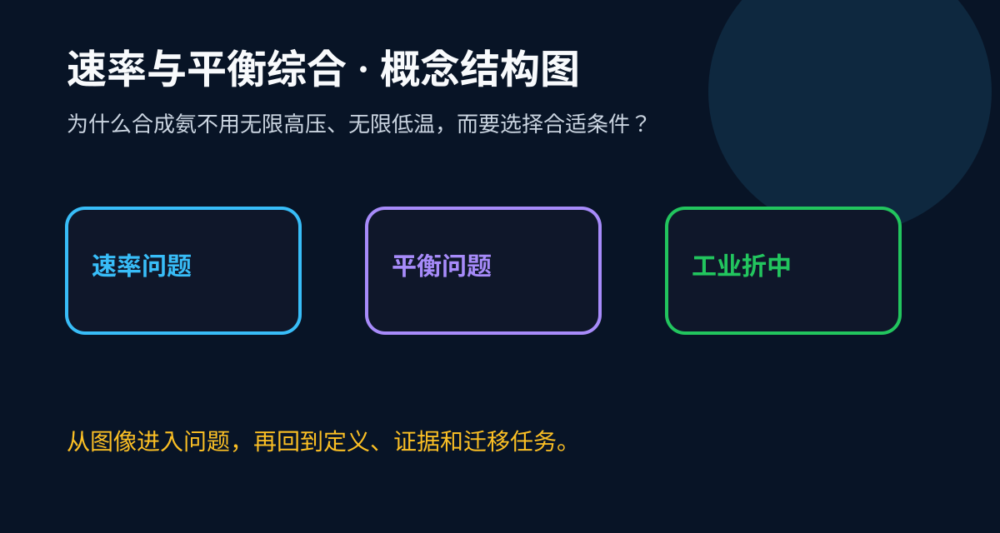

ABT Story
角色任务：合成氨工艺优化师
And 已有经验
你已经分别学习了反应速率和化学平衡，知道温度、压强、催化剂等条件会影响反应过程。
But 真实卡点
工业生产不是只追求“快”，也不是只追求“平衡产率高”。有些条件提高速率却降低产率，有些条件提高产率却成本太高。
Therefore 本课任务
所以要把速率、平衡、成本、安全放在同一个决策框架里，理解工业反应条件为什么常常选择折中方案。

认识化学变化有一定限度、速率，是可以调控的。能多角度、动态地分析化学变化，运用化学反应原理解决简单的实际问题。
实验例子：合成氨条件选择不是只追求高产率，还要折中速率、成本和设备安全。
分清速率问题和平衡移动问题，催化剂只改速率不改平衡位置。
只背概念不看实验现象、微粒变化和守恒条件，会导致结论空泛。
课堂任务：请用“现象/文本/地图/实验数据 → 关键证据 → 学科解释 → 迁移应用”四步，重写一个关于「速率与平衡综合」的新问题。


化学反应速率指单位时间内反应物浓度减少或生成物浓度增加的量，通常用 mol/(L·s) 表示。例如铁钉在稀盐酸中溶解，气泡产生速度可直观反映反应快慢。化学平衡则是正逆反应速率相等的动态平衡状态，如 N₂(g) + 3H₂(g) ⇌ 2NH₃(g) 的合成氨反应。此时各物质浓度不再变化但微观反应仍在持续，就像商场进出人数相同时的'动态人流'。理解这两个概念是分析工业条件选择的基础，需要特别注意平衡常数 K 只与温度有关，而速率受温度、浓度、催化剂等多因素影响。
当系统平衡被打破时，体系会自发向减弱这种改变的方向移动。例如合成氨反应中增加氮气浓度，平衡会向右移动消耗更多氮气（但不可能完全抵消增加量）。工业上应用此原理时需注意：1) 原理仅预测方向不涉及定量，实际移动程度需通过平衡常数计算；2) 催化剂同等加速正逆反应，不影响平衡位置。以二氧化硫氧化为例，虽然高压有利于三氧化硫生成，但设备承压能力限制了实际采用的压力值。这种'理论最优'与'工程可行'的矛盾正是条件折中的核心问题。
升高温度总会加快反应速率（阿伦尼乌斯公式），但对平衡的影响取决于反应热：吸热反应（ΔH>0）平衡正向移动，放热反应（ΔH<0）逆向移动。例如合成氨（ΔH=-92kJ/mol）在高温下速率加快但平衡产率下降。工业上采用 400-500℃ 的折中温度：1) 低于 400℃ 时铁催化剂活性不足；2) 超过 500℃ 则产率急剧下降。类似地，人体酶最适温度也是活性与稳定性的平衡——发烧超过 40℃ 会导致酶变性，尽管反应速率理论上仍可提升。
对于气态反应，增压会使平衡向气体分子数减少的方向移动。合成氨反应中 1 体积 N₂ + 3 体积 H₂ → 2 体积 NH₃，理论上高压最有利。但实际采用 15-25MPa 而非更高压是因为：1) 超过 30MPa 需要特殊钢材，设备成本指数级增长；2) 高压下氢气会渗透金属导致氢脆现象。类似折中也见于碳酸饮料生产——加压溶解更多 CO₂ 但要控制瓶体承压极限。值得注意的是，惰性气体等比例增加总压但不改变分压时，对平衡无影响（这与学生常见误区形成对比）。
催化剂通过降低活化能加速反应，理论上不影响平衡但实际选择极为关键。合成氨使用铁催化剂而非更高效的钌催化剂，原因包括：1) 铁廉价且易获得；2) 钌对硫化物敏感，原料需深度净化增加成本。生物体内的酶催化也体现类似优化——消化酶浓度既不能过低影响效率，也不宜过高造成能量浪费。工业上还会遇到催化剂'活性温度窗口'问题，如汽车尾气处理催化剂需在 200-500℃ 工作，这直接影响了发动机工况设计。
持续移走产物能使平衡不断右移，工业上常采用：1) 液化分离（如氨的冷水冷凝）；2) 循环利用未反应原料。但实际操作需权衡：合成氨反应中过快的原料气循环会导致：1) 能耗增加；2) 惰性气体累积。类似策略见于人体血液 pH 调节——呼吸加快排出 CO₂ 使 H⁺ + HCO₃⁻ ⇌ H₂CO₃ 平衡左移，但过度换气会引起碱中毒。现代化工厂采用 DCS 系统动态调节进料比，就像恒温动物通过负反馈维持稳态。
工业条件的折中选择本质是多变量优化问题，需建立包含：1) 速率方程 r=k·[A]ᵐ[B]ⁿ；2) 平衡常数 K=[C]ᵖ[D]ᑫ/[A]ˣ[B]ʸ；3) 经济成本函数的数学模型。以接触法制硫酸为例，二氧化硫转化率 η 与温度 T 的关系为 η(T)=Kₚ(T)/[1+Kₚ(T)]，但实际最佳温度还需叠加：1) 催化剂 V₂O₅ 的活性曲线；2) 能量回收效率。这类似于寻找抛物线最高点的过程，需要同时考虑热力学和动力学约束。
当代工业在传统折中基础上新增环境维度：1) 酶催化替代重金属催化剂（如制药业用脂肪酶）；2) 超临界流体替代有机溶剂（如 CO₂ 干洗技术）；3) 膜分离替代高能耗蒸馏。这些创新往往能突破原有约束——生物固氮酶在常温常压下工作，虽目前效率不及哈伯法，但避免了 2% 全球能源消耗。类似突破也见于锂电池发展：提升能量密度的同时解决钴资源限制，体现着'条件折中'理念的动态进化。
1. 为什么冰镇碳酸饮料开盖后气泡涌出速度会逐渐减慢？2. 人体发烧时代谢加快，但为什么超过 40℃ 会有生命危险？
1. 某可逆反应 ΔH<0，若采用'先高温后低温'的分段控温策略，分别会对速率和平衡产生什么影响？2. 请解释合成氨工厂为什么要定期排放部分循环气？
常见误区1：认为平衡时正逆反应停止（实际是动态平衡）。错因在于将宏观现象与微观过程混淆。诊断方法：用同位素标记实验证明分子持续转化。误区2：认为增加任一反应物浓度总能提高产物总量（忽略化学计量比）。诊断：通过平衡常数计算各物质浓度关系。
迁移挑战：设计一个实验室模拟工业折中条件的探究方案。要求：1) 选择酯化反应等典型案例；2) 分析温度对转化率和速率的影响曲线；3) 提出兼顾设备安全与反应效率的优化建议。